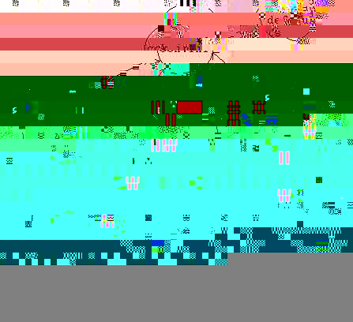

|
|
Functional Specifications Version 1.0
Author : Bhuvan Rachamreddy Document Creation : 12/12/98 Last Revision : 12/28/98 Table of Contents 1. Summary
5. Issues 8. Document History 1. Summary
2. CCK Wizard Machine Design
3. Engineering Goals
As explained in the design process, the whole CCK wizard is an INI file driven application. INI file is a simple text file with control and display information. In the wizard context, we can say each INI file is a page. It is not necessary for every page to contain display information, in which case that page is considered as a container page. For every page that has display information (listed as Widget1....Widget'n'), Wizard Machine should create and display a dialog whenever required. The following link points to the document that lists the syntax of an INI file. Wizard Machine processes INI file using the following function. WizardMachine::ProcessPage(iniFile); The above function preforms 2 major tasks. It reads the control information from the INI file and stores the values in the appropriate data structures. If that INI file has sub pages, INI files corresponding to those pages are processed recursively until Wizard Machine hits page that contains some display information. The data structure in which the INI file heirarchey is maintained is explained in Manage data section. Wizard Machine starts with a property sheet loaded onto a base dialog.
Property sheet provides us with standard wizard controls. On identifying
the file to be displayed, Wizard Machine creates a property page and adds
that page to the property sheet. When it parses the INI file with display
(widget) information and it stores that data in the global Widget data
structures. Then it generates all those widgets dynamically and places
them on a property page.
Wizard Machine builds a tree structure to store information provided in the INI files. Each INI file corresponds to a node in the tree. A node structure can be defined as follows. struct node {
As each INI file gets represented with the above node structure, Wizard Machine will have access to all INI files via tree data structure. If an INI file has child nodes, a subtree will be built from that INI file and will be added to the main tree structure. Here is the sample tree built out of set of INI files. A top level cck.ini as root and other major CCK components as childnodes to the root. Screen1..Screen3 are the dialogs to be displayed for Configuration Editor.  Wizard Machine needs to update the data and when it enters or exits a particular node. This will allow the other nodes to access the most recent information. Every major component of CCK depend on Wizard Machine to maintain and
provide access to the global data used in the application. Global information
will be stored as name value pairs in a Global array allowing each node
access and update the information as and when required.
A standard wizard approach is pursued in developing CCK wizard and similiar approach will be applied to the Account Setup wizard. Regular wizard interface is provided by a class named property sheet. VC++ has already defined that class. Typically in a property sheet, you have navigation related buttons at the bottom and area for the dialog to be displayed on the top. Standard navigation buttons are Next, Back, Cancel and Help. Wizard Machine controls the actions that need to be performed on clicking on one of navigation buttons. On clicking Next, unless otherwise INI file has defined directive in it to take a new path, Wizard Machine always moves to the sibling of the node in which the action is occurred. A sibling is built if needed and a corresponding property page is added as next node in the navigation scheme. If there are no siblings it tries to identify parent's sibling and move there. This task is performed recursively until a node is found. On the last page, Next button will be replaced by Done or Finish button. For each node it creates, Wizard Machine adds a property page to property sheet. Property sheet internally keeps track of the order in which property pages are added. So, on clicking Back, Wizard Machine moves a page back and displays the appropriate property page i.e., a dialog that takes user input. Wizard Machine need to set the all the pointers to the correct location maintaining the right links between the page and it's widgets. While entering and leaving nodes, Wizard Machine executes onEnter and onExit functions appropriately to maintain the global data synchronization. On clicking Cancel, Wizard Machine exits the application. On clicking Help, a standard window help screen will be displayed with appropriate help file loaded into it. Name of the help file can be obtained from the corresponding INI file, essentially via node representing that INI file. 5. Issues
Following functionalities should be tested as the development efforts progress.
Development work done on Wizard Machine, as of now, allows us to provide command line options to specify the root INI file (like cck.ini) and the desired navigation sequence. As a part of navigation, Wizard Machine records information about the nodes visited in an output file named "output.dat" (created in the directory from which the WizardMachine program is executed). Soon, this work will be integrated with program that can generate UI from INI files. For now, here is how the Wizard Machine works, the input it takes and output it generates. Input : a root INI file, a path to navigate Syntax : WizardMachine.exe -i <INI
file name> -p <actions>
INI file name : Root INI file that controls the over all tree structure actions : possbile actions like next (n), back(b), cancel(c) Example : WizardMachine.exe -i cck.ini -p nnnbnbbnc
Functionality : Wizard Machine takes the root INI file and generates the very first leaf node (usually the left most node of the tree) and all other nodes in that path. At this point Wizard Machine waits for the user's action. With UI turned on, it is easy to wait and capture user's choice of actions. As that need to be done, we will simulate user's desired actions by passing them via command line arguments. Wizard Machine interprets 'n' as GoToNextNode, 'p' as GoToPrevNode and 'c' as Cancel while navigating the tree. As only the leftmost node (and parent nodes) gets built in the beginning, WizardMachine builds other nodes whenever it tries to visit those nodes and finds no such nodes. So, WizardMachine thus builds the tree dynamically depending on user's actions. Output : As Wizard Machine visits each node
it writes the node details into an output file (output.dat). So, we can
determine the correctness of navigation by looking at output file contents.
8. Document History
|
|||||||||||||||||||
| Copyright © 1998-1999 The Mozilla Organization. | |||||||||||||||||||